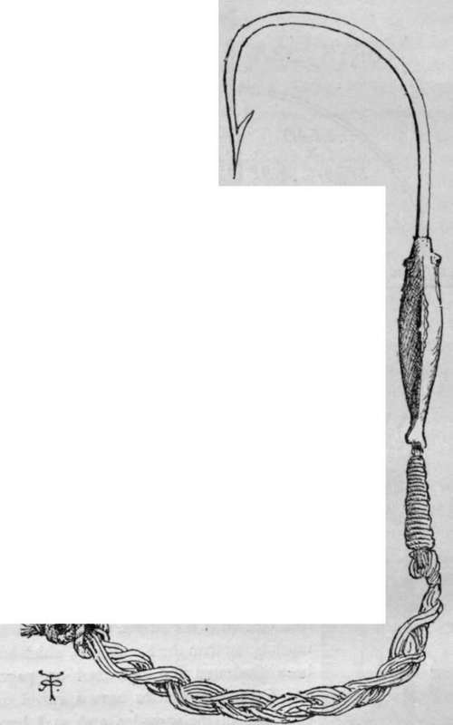
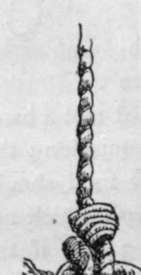
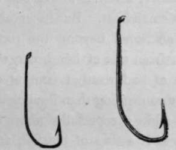
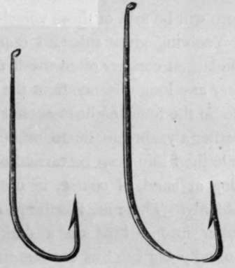
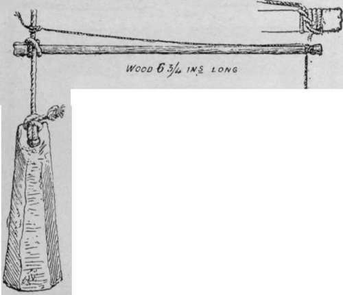
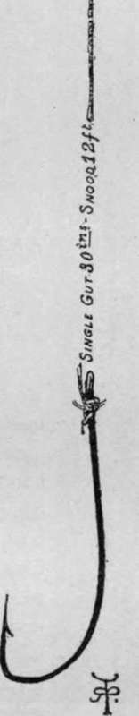

Sea Fishing From Yachts And Large Fishing Boats. Part 2
Description
This section is from the book "Sea Fishing", by John Bickerdyke. Also available from Amazon: Sea Fishing.
Sea Fishing From Yachts And Large Fishing Boats. Part 2
Suppose, now, we are fishing a very deep place where such heavy leads are required that a hand line must be brought into requisition ; the exact form of tackle to be used should depend on the variety of fish which are about. For bottom-feeding fish, if the tidal, current is not strong, there is nothing much better than the Kentish rig, which has been illustrated and described on pages 265-6. It is as well to have a swivel on each end of the spreader, and, as I have said, when fishing for whiting it is most desirable to have a gut snood between the swivels and the hooks.
For fish which are found at a little distance from the bottom, the paternosters referred to on pp. 238 and 241 are admirable tackles, fishing at different depths. A paternoster for use on a hand line can be made up with the hook links placed any distance apart the fisherman pleases. In a heavy current where the water is deep, one of the best gears is simply a boat-shaped lead with a long snood bearing one or two hooks below it. But I rather prefer to stick to the paternoster, merely varying it to meet the case by prolonging the lower hook link to a fathom or thereabouts.
There is really no object in having a large number of different forms of tackle where one will do. In a very powerful current which would be otherwise unfishable, a small grapnel may be substituted for the lead. This if lowered quickly grips the bottom and defies the tide. With this gear it is as well to have hooks to the number of a dozen or thereabouts, and the thing then really resolves itself into a drift-trot. The illustration on p. 273 shows what is probably the heaviest hand line used by professional fishermen. It hails from the North Sea, Iceland and Faroe. The hook, drawn full size in the illustration on p. 274, should be noted. It has a little bright lead casting of a fish on its shank. This the men believe adds to the attractions of the bait. The plaited hemp, as I have explained elsewhere, longer withstands the sharp teeth of conger, ling, and shark than the ordinary snood.
It is impossible for me to say what sized hook should always be used, as that will depend on the available fish ; for flat fish it must be small, and for cod, pollack, coalfish, haddock, and other roomy-mouthed members of the Gadidce, large. Hake fishing, which is usually done at night, involves the use of a very large hook. In the illustration are hooks of four very useful sizes, with which the yachting fisherman should certainly be provided. Those which are eyed are certainly the most convenient. For soft-mouthed sea fish I am very partial to what is known as the twisted Limerick.
Four Useful-Sized Hooks.
Those illustrated are the well-known Pennell-Limerick pattern. There are some further remarks respecting hooks on p. 70 which should be noted.
Sharks are such destroyers of other fish that, apart from sporting considerations, their capture is very desirable. They are not, as a rule, sought after in British waters, and are often caught and still more often lost when hand lines are being used for smaller and more desirable fish. There is no bait they will not take, and when a long line is set for haddocks or whiting, they think nothing of swimming along the row of hooked fish and picking them one by one off the hooks. More will be said of these voracious creatures later on.
Yachting gives splendid opportunities for conger fishing. The largest congers often dwell among reefs of rocks in deep water at a long distance from the shore, where it would not be safe on the finest night to anchor a small boat. But in suitable weather a yacht can lie to or be anchored beyond the rocks while the fishing can be carried on from one of her boats, she being at hand, of course, in case of bad weather coming on suddenly. There are few things more exciting than hauling big conger into a boat on a dark night; especially when an unusually big fish hits the lantern with a flap of his tail, and then goes on a voyage of inspection under the thwarts, barking the while. Mr. Briggs's eel was nothing to the congers of the Welsh, Scotch, and Irish coasts.
Yachtsmen often have a difficulty in getting a good supply of bait, and it might be worth while to arrange a locker as a sort of bait nursery fitted with well-pitched and ventilated drawers with sea sand or seaweed in them, which could be occasionally moistened with salt water. Sand-eels cannot well be kept alive for any length of time except in a basket in the sea, and the courge, as the special basket for the purpose is termed (see p. 119), is unsuited for towing after a yacht when she is sailing at any rate of speed. But if a fair supply of lug and rag worms can be kept in good condition for a few days at a time, the yachtsman need never be short of sea fish. On the Devon and Cornish coasts several yacht-owners possess the fine meshed seine nets, shown on p. 118, made specially for catching sand-eels. Sand-eels are not only about the best bait for pollack, provided they are used alive, but are also excellent on the table.
MACKEREL TACKLE (SOUTH WALES).
Continue to:
- prev: Chapter VIII. Sea Fishing From Yachts And Large Fishing Boats
- Table of Contents
- next: Sea Fishing From Yachts And Large Fishing Boats. Part 3
Tags
fishing, hooks, bait, fishermen, spanish mackerel, mackerel fishing